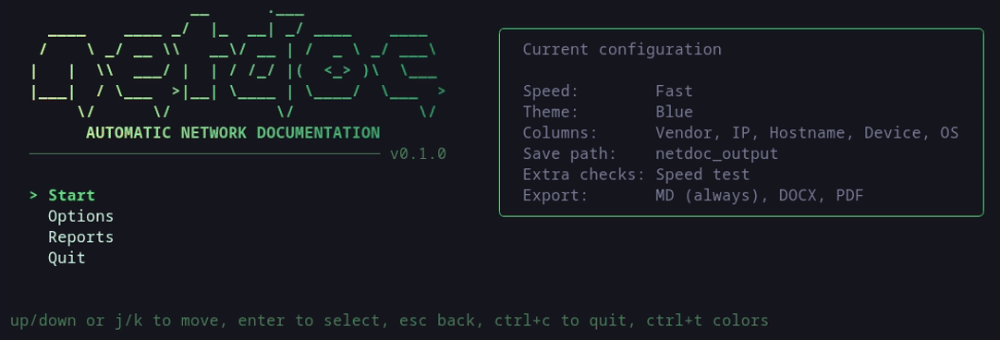

Automatic network documentation
netdoc scans one or more subnets with nmap, sorts the devices it finds into categories and writes a ready-to-share report in Markdown, DOCX, PDF, TXT and HTML. It ships as a single Go binary with an interactive terminal UI. nmap is the only runtime dependency.
preview

features
- Three-step nmap pipeline: host discovery, OS/service detection, NetBIOS names as a hostname fallback.
- Devices grouped by nmap device type: Network, Storage, Specialized Servers, Servers & Workstations, Printer, Power Device, Generic.
- Network Summary with subnet, default gateway and DNS servers (the real upstream servers, also behind systemd-resolved or NetworkManager's dnsmasq).
- Optional extras: internet speed test (Cloudflare), open ports and services, TLS certificate expiry, a Credentials section to fill in by hand.
- Output formats: Markdown (always), DOCX and PDF (default), TXT and HTML (optional), with 7 document color themes.
- Report archive: read, compare two reports, regenerate with another theme, remove categories, delete — all from the stored raw scan data, no rescan.
requirements
- Linux (reads
/proc/net/routeand/etc/resolv.conf). - nmap — if it is missing,
netdoc --subnetoffers to install it with dnf, apt or pacman. - sudo rights (OS detection and UDP probes need root).
- Go 1.24 or newer, only to build from source.
install
Fedora, Rocky Linux, RHEL (installs nmap too):
sudo dnf install ./netdoc-0.1.1-1.x86_64.rpm
Debian, Ubuntu (installs nmap too):
sudo apt install ./netdoc_0.1.1_amd64.deb
Any distribution, from the archive:
tar -xzf netdoc_0.1.1_linux_amd64.tar.gz sudo install netdoc /usr/local/bin/
Build from source:
git clone https://github.com/simonegtt/netdoc-go.git cd netdoc-go go build -o netdoc .
usage
./netdoc # interactive terminal UI ./netdoc --subnet 192.168.10.0/24 # direct scan with default settings ./netdoc --subnet 192.168.10.0/24 --title "Netdoc Corp" --output-dir reports ./netdoc --show-subnets # print the detected local subnets ./netdoc --version # print the version
license
netdoc is released under the MIT License. nmap is not part of netdoc and is not included in any download: netdoc runs the copy of nmap installed on the system, distributed separately under its own license.